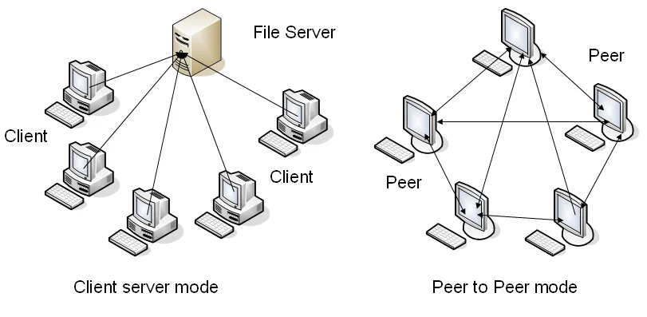
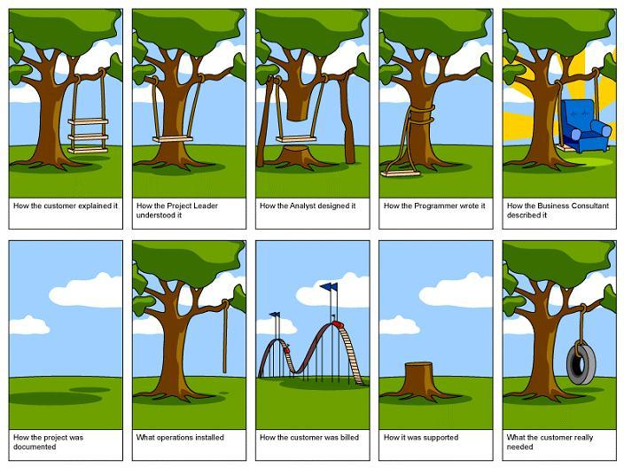
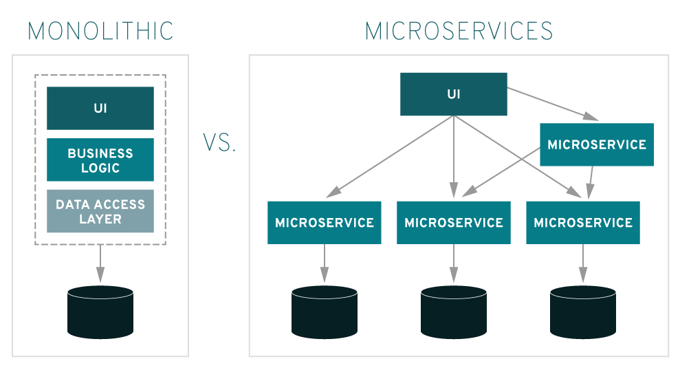
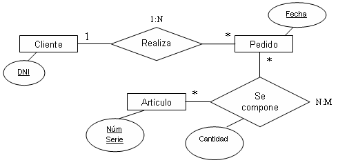
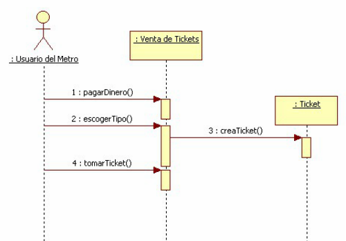
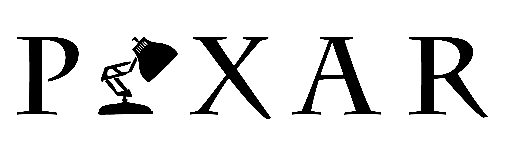
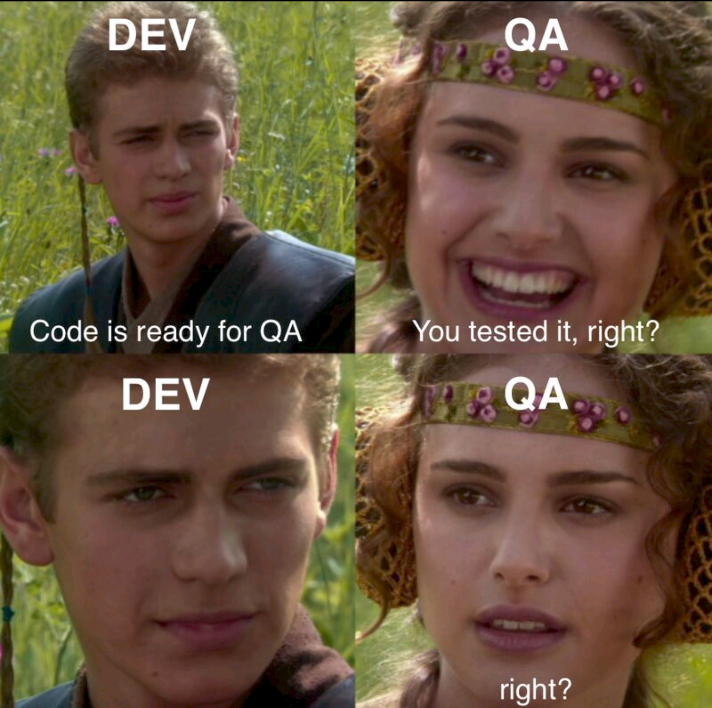

Cliente-Servidor vs Peer-to-peer
Consiste en aplicar Ingeniería a todo el proceso de creación de software: desde que aparece la necesidad o el problema hasta el despliegue y el mantenimiento de la solución. Y hoy ese proceso ya no es una línea recta: se encara de forma iterativa e incremental, avanzando por ciclos en los que el producto se construye y se mejora de a partes.

Es la disciplina que traduce lo que el cliente pide a requerimientos que el equipo puede construir y validar.

Problemas graves de escalabilidad y lentitud extrema. Los usuarios migraron a alternativas como Facebook. Costo: murió como red social.Danger
Sistema armado con múltiples proveedores sin una arquitectura coherente; el sitio colapsó en su lanzamiento. Costo: rehacer gran parte del sistema + impacto político enorme.Danger
Motor no preparado, mismo código para PC, PS4 y Xbox One. Costo: reembolsos, caída del valor de la empresa y años de retrabajo.Danger
En base a los requerimientos funcionales y no funcionales es muy importante escoger la arquitectura más adecuada: cliente-servidor, microservicios, monolito, event-driven… Cada una resuelve bien algunos problemas y mal otros.


Todos los pasos para pasar de los requerimientos a un producto funcional: modelar el dominio, diseñar los datos, escribir el código y llegar a algo que el usuario pueda usar.




Burbn era una app para compartir planes y hacer check-in en lugares, tan cargada de funciones que confundía. Lo único que la gente usaba eran las fotos. La rehicieron alrededor de eso y nació Instagram.
Su primer producto, el Pixar Image Computer, fue un fracaso comercial. Pero su tecnología y su experiencia fueron la base para dedicarse a la animación. Tras años de intentos fallidos llegó Toy Story: el fracaso les dio las herramientas para lograrlo.

Salió lento y con problemas de compatibilidad. Las quejas y las pruebas de campo marcaron la agenda de la versión siguiente: Windows 7.
Que exista un equipo de QA no quiere decir que uno no tenga que probar su propio código.Warning

Basado en «Software Engineering», Sommerville.
No. En la práctica el proceso es iterativo e incremental: se vuelve a etapas anteriores todas las veces que haga falta. Lo vamos a ver en detalle la semana próxima.